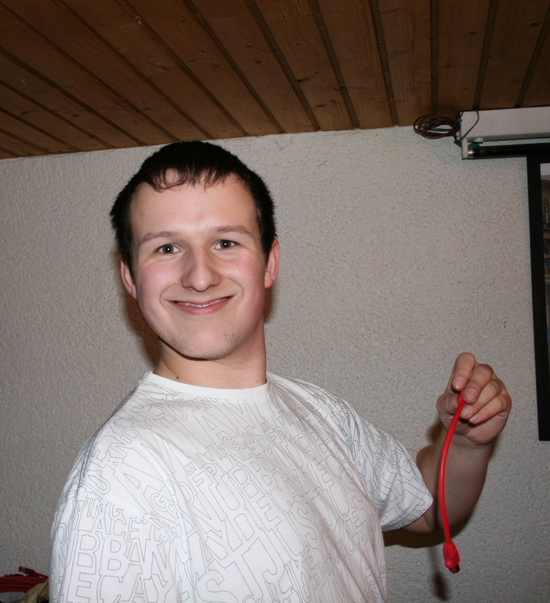
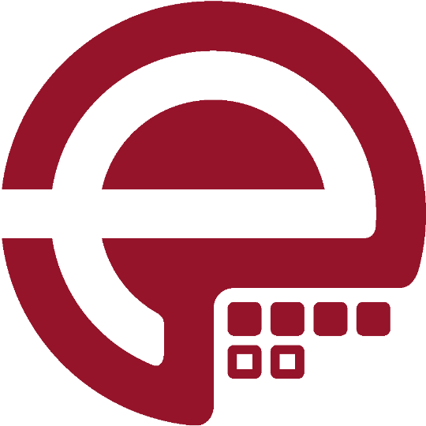

class: center, middle, inverse # Why Open Source brings more value to business? ## Or why you should publish your Puppet modules ??? --- ## $ whoami  * Tim 'bastelfreak' Meusel * Puppet Contributor since 2012 * Merging stuff on [Vox Pupuli](https://voxpupuli.org/) (Puppet Community) since 2015 * Vox Pupuli Project Management Committee member * Senior IT Automation Consultant at [example42](https://example42.com/) <a href='https://example42.com' alt='company website example42'></a> ??? * --- class: center, middle, inverse # What's this Vox Pupuli thingy? ??? * lets have a look on the daily tasks a maintainer can do to keep modules in shape --- .left-column[ ## Vox Pupuli ### What? ] .right-column[ * Maintain many many Puppet modules ] <a href='https://example42.com' alt='company website example42'></a> .footnote[[@bastelsblog](https://twitter.com/bastelsblog) for [@voxpupuliorg](https://twitter.com/voxpupuliorg)] ??? * 150 Puppet modules * 43 Ruby Gems --- .left-column[ ## Vox Pupuli ### What? ] .right-column[ * Maintain many many Puppet modules * Be helpful and polite to each other ] <a href='https://example42.com' alt='company website example42'></a> .footnote[[@bastelsblog](https://twitter.com/bastelsblog) for [@voxpupuliorg](https://twitter.com/voxpupuliorg)] ??? --- .left-column[ ## Vox Pupuli ### What? ] .right-column[ * Maintain many many Puppet modules * Be helpful and polite to each other * Be open-minded to people and technology ] <a href='https://example42.com' alt='company website example42'></a> .footnote[[@bastelsblog](https://twitter.com/bastelsblog) for [@voxpupuliorg](https://twitter.com/voxpupuliorg)] ??? --- .left-column[ ## Vox Pupuli ### What? ] .right-column[ * Maintain many many Puppet modules * Be helpful and polite to each other * Be open-minded to people and technology * Provide a home for orphaned Puppet modules ] <a href='https://example42.com' alt='company website example42'></a> .footnote[[@bastelsblog](https://twitter.com/bastelsblog) for [@voxpupuliorg](https://twitter.com/voxpupuliorg)] ??? --- .left-column[ ## Vox Pupuli ### What? ] .right-column[ * Maintain many many Puppet modules * Be helpful and polite to each other * Be open-minded to people and technology * Provide a home for orphaned Puppet modules * Unite lonely module and tooling authors to a collective ] <a href='https://example42.com' alt='company website example42'></a> .footnote[[@bastelsblog](https://twitter.com/bastelsblog) for [@voxpupuliorg](https://twitter.com/voxpupuliorg)] ??? --- .left-column[ ## Vox Pupuli ### What? ] .right-column[ * Maintain many many Puppet modules * Be helpful and polite to each other * Be open-minded to people and technology * Provide a home for orphaned Puppet modules * Unite lonely module and tooling authors to a collective * Ensure continued development for our code ] <a href='https://example42.com' alt='company website example42'></a> .footnote[[@bastelsblog](https://twitter.com/bastelsblog) for [@voxpupuliorg](https://twitter.com/voxpupuliorg)] ??? --- .left-column[ ## Vox Pupuli ### Who? ] .right-column[ * Amount of Vox Pupuli members with merge permissions  ] <a href='https://example42.com' alt='company website example42'></a> .footnote[[@bastelsblog](https://twitter.com/bastelsblog) for [@voxpupuliorg](https://twitter.com/voxpupuliorg)] ??? * 161 members in the GitHub org with merge access --- class: center, middle, inverse # How to design a good Puppet module? ??? --- .left-column[ ## Module Design ### Status Quo ] .right-column[ * You write your own component Puppet modules * You also want to reuse Open Source component modules from others ] <a href='https://example42.com' alt='company website example42'></a> .footnote[[@bastelsblog](https://twitter.com/bastelsblog) for [@voxpupuliorg](https://twitter.com/voxpupuliorg)] ??? * a component module manages a component of the infrastructure * a specific software * like nginx or mysql --- .left-column[ ## Module Design ### Status Quo ] .right-column[ * You write your own component Puppet modules * You also want to reuse Open Source component modules from others * Many of your servers are very similar, but not identical ] <a href='https://example42.com' alt='company website example42'></a> .footnote[[@bastelsblog](https://twitter.com/bastelsblog) for [@voxpupuliorg](https://twitter.com/voxpupuliorg)] ??? * all servers use your internal DNS resolver in /etc/resolv.conf * except for the DNS server itself, which forwards to cloudflare --- .left-column[ ## Module Design ### Status Quo ] .right-column[ * You write your own component Puppet modules * You also want to reuse Open Source component modules from others * Many of your servers are very similar, but not identical * Design requirement 1: Use internal and external component modules in parallel * Design requirement 2: Assign those component modules to groups of servers ] <a href='https://example42.com' alt='company website example42'></a> .footnote[[@bastelsblog](https://twitter.com/bastelsblog) for [@voxpupuliorg](https://twitter.com/voxpupuliorg)] ??? --- .left-column[ ## Module Design ### Status Quo ### Roles & Profiles ] .right-column[ .nowidth[] ] <a href='https://example42.com' alt='company website example42'></a> .footnote[[@bastelsblog](https://twitter.com/bastelsblog) for [@voxpupuliorg](https://twitter.com/voxpupuliorg)] ??? --- .left-column[ ## Module Design ### Status Quo ### Roles & Profiles ### Data vs Code ] .right-column[ * People that write Puppet Code might not provide the data ] <a href='https://example42.com' alt='company website example42'></a> .footnote[[@bastelsblog](https://twitter.com/bastelsblog) for [@voxpupuliorg](https://twitter.com/voxpupuliorg)] ??? --- .left-column[ ## Module Design ### Status Quo ### Roles & Profiles ### Data vs Code ] .right-column[ * People that write Puppet Code might not provide the data * System administrators team A write Puppet code * System administrators from team B provide ip addresses * Product owner provide version numbers ] <a href='https://example42.com' alt='company website example42'></a> .footnote[[@bastelsblog](https://twitter.com/bastelsblog) for [@voxpupuliorg](https://twitter.com/voxpupuliorg)] ??? --- .left-column[ ## Module Design ### Status Quo ### Roles & Profiles ### Data vs Code ] .right-column[ * People that write Puppet Code might not provide the data * System administrators team A write Puppet code * System administrators from team B provide ip addresses * Product owner provide version numbers * Secrets should come from a secret store like Hashicorp Vault ] <a href='https://example42.com' alt='company website example42'></a> .footnote[[@bastelsblog](https://twitter.com/bastelsblog) for [@voxpupuliorg](https://twitter.com/voxpupuliorg)] ??? --- .left-column[ ## Module Design ### Status Quo ### Roles & Profiles ### Data vs Code ] .right-column[ * People that write Puppet Code might not provide the data * System administrators team A write Puppet code * System administrators from team B provide ip addresses * Product owner provide version numbers * Secrets should come from a secret store like Hashicorp Vault * Design requirement 3: Separate data and code ] <a href='https://example42.com' alt='company website example42'></a> .footnote[[@bastelsblog](https://twitter.com/bastelsblog) for [@voxpupuliorg](https://twitter.com/voxpupuliorg)] ??? --- .left-column[ ## Module Design ### Status Quo ### Roles & Profiles ### Data vs Code ] .right-column[ .nowidth[] ] <a href='https://example42.com' alt='company website example42'></a> .footnote[[@bastelsblog](https://twitter.com/bastelsblog) for [@voxpupuliorg](https://twitter.com/voxpupuliorg)] ??? --- .left-column[ ## Module Design ### Status Quo ### Roles & Profiles ### Data vs Code ] .right-column[ * It's hard for enforce code design/architecture with CI jobs * You might leak private information if you publish an existing internal module ] <a href='https://example42.com' alt='company website example42'></a> .footnote[[@bastelsblog](https://twitter.com/bastelsblog) for [@voxpupuliorg](https://twitter.com/voxpupuliorg)] ??? --- .left-column[ ## Why Open Sourcing? ### Technical aspects ] .right-column[ * Publish a module from the beginning * This enforces a proper structure in your code ] <a href='https://example42.com' alt='company website example42'></a> .footnote[[@bastelsblog](https://twitter.com/bastelsblog) for [@voxpupuliorg](https://twitter.com/voxpupuliorg)] ??? --- .left-column[ ## Why Open Sourcing? ### Technical aspects ] .right-column[ * Publish a module from the beginning * This enforces a proper structure in your code * This ensures secrets are never added to it ] <a href='https://example42.com' alt='company website example42'></a> .footnote[[@bastelsblog](https://twitter.com/bastelsblog) for [@voxpupuliorg](https://twitter.com/voxpupuliorg)] ??? --- .left-column[ ## Why Open Sourcing? ### Technical aspects ] .right-column[ * Publish a module from the beginning * This enforces a proper structure in your code * This ensures secrets are never added to it * Many companies still don't have internal CI * There are free CI services for open source software! ] <a href='https://example42.com' alt='company website example42'></a> .footnote[[@bastelsblog](https://twitter.com/bastelsblog) for [@voxpupuliorg](https://twitter.com/voxpupuliorg)] ??? --- .left-column[ ## Why Open Sourcing? ### Technical aspects ### Vox Pupuli ] .right-column[ Vox Pupuli sales pitch: * Vox Pupuli has proper tooling to handle many modules * Vox Pupuli maintains community guidelines and best practices * Working in a collective enforces proper documentation and git commits ] <a href='https://example42.com' alt='company website example42'></a> .footnote[[@bastelsblog](https://twitter.com/bastelsblog) for [@voxpupuliorg](https://twitter.com/voxpupuliorg)] ??? * It's important to document code (changes) properly * new hires need to understand it * this gets tricky if documentation is reviewed by a small group of people that work with you on a daily basis * people that don't contribute to open source often have issue explaining code changes properly in git commits --- .left-column[ ## Why Open Sourcing? ### Technical aspects ### Company advantages ] .right-column[ * Companies that do open source work are recognized in the community * Attract new hires through open source work * Benefit from the knowledge and contributions within the community * Benefit from the tooling within the community ] <a href='https://example42.com' alt='company website example42'></a> .footnote[[@bastelsblog](https://twitter.com/bastelsblog) for [@voxpupuliorg](https://twitter.com/voxpupuliorg)] ??? --- class: center, middle, inverse # Conclusion ??? --- .left-column[ ## Conclusion ] .right-column[ * You should publish your internal puppet modules * Vox Pupuli is awesome, please contribute! * We've great tooling to scale module handling ] <a href='https://example42.com' alt='company website example42'></a> .footnote[[@bastelsblog](https://twitter.com/bastelsblog) for [@voxpupuliorg](https://twitter.com/voxpupuliorg)] ??? * We've some open issues with collected ideas. We need feedback! --- .left-column[ ## Conclusion ] .right-column[ * You should publish your internal puppet modules * Vox Pupuli is awesome, please contribute! * We've great tooling to scale module handling * For feedback: `bastelfreak` on slack or [tim@bastelfreak.de](mailto:tim@bastelfreak.de) ### Thanks for your attention! ] <a href='https://example42.com' alt='company website example42'></a> .footnote[[@bastelsblog](https://twitter.com/bastelsblog) for [@voxpupuliorg](https://twitter.com/voxpupuliorg)] ??? * We've some open issues with collected ideas. We need feedback!